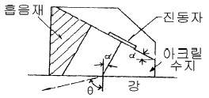
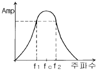
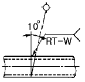
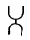
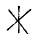
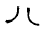

초음파비파괴검사산업기사(구) (2003-05-25 기출문제)
1과목: 초음파탐상시험원리
1. 수신효율이 가장 뛰어나고 음향 임피던스가 낮아, 수침용 탐촉자로 사용되나 수용성이므로 방수가 필요한 탐촉자는?
- 수정
- 황산리튬
- 니오비움산 납
- 티탄산 바륨
(정답률: 알수없음)

2. 초음파탐상장치를 사용하기 전에 탐상기기가 정상인지의 여부를 점검할 목적으로 사용하는 점검방법은?
- 특별점검
- 일상점검
- 정기점검
- 교정점검
(정답률: 알수없음)
3. 탐상재료의 한쪽 면과 그 반대 면 즉, 양면에 서로 다른 2개의 탐촉자를 사용하는 탐상 방법은?
- 접촉탐상
- 표면탐상
- 투과탐상
- 판파탐상
(정답률: 알수없음)
4. 직경이 20㎜인 탐촉자를 사용하여 DGS선도에서 결함의 크기를 산출할 때 결함의 규준화 직경이 0.2 였다면 결함의 크기는 얼마인가? (단, 결함은 원형평면결함으로 가정)
- 1㎜
- 2㎜
- 3㎜
- 4㎜
(정답률: 알수없음)
5. 그림은 경사각탐촉자의 단면도이다. 강재 중에 횡파만 전파시키기 위해서는 아크릴 쐐기의 각도를 어느 범위로 조정하면 되는가? (단, 아크릴수지 내의 종파속도는 2730m/s, 강재 중의 종파속도는 5900m/s, 횡파속도는 3230m/s)

- 14° ≤ α ≤ 36°
- 28° ≤ α ≤ 57°
- 35° ≤ α ≤ 80°
- 24° ≤ α ≤46°
(정답률: 알수없음)
6. 비파괴검사법중 시험체의 내부와 외부에 압력차를 만들어 기체나 액체가 결함을 통해 흘러 들어가거나 나오는 것을 감지하는 방법으로 압력용기나 배관 등에 적용하는 시험법은?
- 침투탐상검사
- 누설검사
- 자분탐상검사
- 초음파탐상검사
(정답률: 알수없음)
7. 초음파탐상시험시 시험편 내부에 존재하는 결함크기의 측정 방법이 아닌 것은?
- DAC곡선 이용법
- AVG도표 이용법
- 6dB drop법
- 다이알 게이지 이용법
(정답률: 알수없음)
8. 초음파 수직탐상시 고려해야 할 사항과 밀접한 관계가 없는 것은?
- 탐상 방향
- 입사점 측정
- 탐상 범위
- 주파수 선정
(정답률: 알수없음)
9. 시험편내에 초음파를 투과할 때 빔(Beam)분산이 발생되는 영역은?
- 원거리음장
- 근거리음장
- 원거리음장과 근거리 음장사이
- 진동자 댐퍼
(정답률: 알수없음)
10. 알루미늄에서 표면파가 발생하도록 쐐기를 설계할 때 입사각은? (단, 알루미늄에서의 횡파속도는 3100m/s, 쐐기에서의 종파속도는 2700m/s)
- 61°
- 57°
- 75°
- 48°
(정답률: 알수없음)
11. 다음 중 45° 경사각 탐촉자는 시험편의 어떤 결함을 찾기에 가장 적합한가?
- 음파의 진행방향에 수직이며 탐상표면과 평행한 결함
- 음파의 진행방향과 평행이며 탐상표면 수직에 45°로 있는 결함
- 탐상표면에 수직인 결함
- 음파의 진행방향에 수직이며 탐상표면과 45° 를 이루는 결함
(정답률: 알수없음)
12. 초음파탐상시험을 수행하기 전에 반드시 점검해야 할 조건이 아닌 것은?
- 시험체의 재질 및 두께를 측정한다.
- 측정범위을 조정한다.
- 탐상기의 시간축 및 시험체의 표면상태를 확인한다
- 게이트(gate)값을 설정한다.
(정답률: 알수없음)
13. 다른 비파괴검사법에 비해 결함의 종류, 형상의 판별은 우수하나 라미네이션 등과 같은 결함의 검출이 어려운 비파괴검사법은?
- 초음파탐상시험
- 와전류탐상시험
- 방사선투과시험
- 자분탐상시험
(정답률: 알수없음)
14. 초음파탐상시험시 공진법으로 두께를 측정할 때 다음 중 어떠한 현상을 이용하는가?
- 두께가 초음파 파장의 1/2일 때 초음파에너지가 증가
- 두께가 초음파 파장의 1/4이하일 때 초음파에너지가 손실
- 두께가 초음파 파장의 1/2일 때 초음파에너지가 손실
- 두께가 초음파 파장의 1/4이하일 때 초음파에너지가 증가
(정답률: 알수없음)
15. 비파괴시험에서 결함을 검출하는 목적에 대해 기술한 것이다. 올바른 것은?
- 비파괴시험을 실시하는 시험대상물의 제작코스트를 명확하게 하기 위함이다.
- 시험부에 생기는 스트레인을 알기 위함이다.
- 시험대상에 따라서 결함의 허용한도를 명확하게 하기 위함이다.
- 결함을 확실하게 검출할 수 있는 제조방법을 선정하기 위함이다.
(정답률: 알수없음)
16. 초음파탐상검사를 원리에 따라 분류할 때 해당되지 않은 것은?
- 공진법
- 투과법
- 탠덤법
- 펄스 반사법
(정답률: 알수없음)
17. 와전류탐상시험의 특징에 대해 기술한 것이다. 올바른 것은?
- 시험결과의 기록이나 보존이 용이하지 않으나 복잡한 형상의 시험체의 전면탐상에 대해서는 능률이 좋다.
- 지시에 영향을 주는 인자가 많기 때문에 탐상이나 재질, 크기 등의 시험에 적용 가능하나 결함이외의 잡음 인자의 판별이나 억제의 필요가 있다.
- 시험코일의 비접촉 사용이나 전기신호의 결과가 얻어지는 자동화가 가능하기 때문에 자성, 비자성의 유리관, 환봉, 선에 대해 고속으로 능률좋은 시험이 가능하다.
- 시험코일의 가열이나 대형화 등에 의해 고온에서의 탐상, 세선, 두께가 얇은 관, 구멍의 내면 등의 다른 시험방법이 적용하기 어려운 대상에 이용하는 것이 가능하다.
(정답률: 알수없음)
18. 다음은 내부결함의 검출에 적절한 최적 비파괴시험에 대해 기술한 것이다. 올바른 것은?
- 강판 표면에 평행한 면상의 내부결함을 검출하는데는 방사선투과시험이 최적이다.
- 구(球)형의 내부결함이 많은 주조품을 조사하는데는 초음파탐상시험이 최적이다.
- 용접부 블로홀의 검출에는 초음파탐상시험이 최적이다.
- 맞대기용접부나 주조품의 내부에는 여러 형상의 결함이 혼재해있기 때문에 방사선투과시험과 초음파탐상시험을 병용하는 것이 요망된다.
(정답률: 알수없음)
19. 다음 중 판파로 가장 잘 검출할 수 있는 결함의 위치는?
- 표면상에 존재하는 결함
- 표면에서 3파장 정도의 깊이에 있는 결함
- 표면에서 1 파장 정도의 깊이에 있는 결함
- 표면에서 6 파장 정도의 깊이에 있는 결함
(정답률: 알수없음)
20. 그림은 탐촉자의 주파수 영역을 나타낸 것으로 이 탐촉자의 Q값(quality factor)를 구하는 식은?

- fc/f2-f1
- fc/f1-f2
- fc/f1· f2
- f2-f1/fc
(정답률: 알수없음)
2과목: 초음파탐상검사
21. 다음 중 결함의 크기가 동일한 경우 초음파의 반사량이 가장 적다고 생각되는 결함의 형태는?
- 원형 평면 결함
- 불규칙한 형태의 결함
- 사각 평면 결함
- 구형 결함
(정답률: 알수없음)
22. 황동에 대한 횡파의 음향 임피던스는 얼마인가? (단, 알루미늄 밀도: 2700kg/m3, 종파의 속도 : 6320m/sec ,횡파의 속도 : 3130m/sec, 황동 밀도 : 8400kg/m3, 종파의 속도 : 4400m/sec, 횡파의 속도 : 2200m/sec)
- 37×106kg/(m2∙sec)
- 17×106kg/(m2∙sec)
- 37×107kg/(m2∙sec)
- 17×107kg/(m2∙sec)
(정답률: 알수없음)
23. 초음파탐상시험에 대한 다음 설명중 올바른 것은?
- 동일 크기의 결함이 있는 경우 초음파탐상시험에 의해서 가장 높은 결함에코가 검출되는 것은 초음파의 진행방향에 평행한 균열이다.
- 경사각탐상에 있어서의 전후주사는 용접선에 대해 전후 방향으로 탐촉자를 주사하는 것이다.
- 경사각탐상은 탐상면에 대해 수직으로 초음파를 입사시키는 방법으로 결함의 위치와 크기의 추정 및 시험체 두께의 측정이 가능하다.
- 수직탐상은 탐상면에 대해 경사로 초음파를 입사시키는 방법으로 결함의 위치와 크기의 추정 및 시험체 두께의 측정이 가능하다.
(정답률: 알수없음)
24. 초음파탐상 시험장치에 대한 설명으로 바른 것은?
- 초음파탐상기의 눈금판의 횡축은 초음파 빔의 전파거리, 종축은 에코높이를 표시한다.
- 표준시험편을 이용하여 초음파탐상기 눈금판의 종축 눈금의 측정범위를 조정해 놓으면 에코의 크기에 의해 탐촉자로부터 결함까지의 거리를 알 수 있다.
- 표시기 상의 에코 상승위치는 감도를 높이면 원점으로부터 멀어진다.
- 표시기 상의 에코높이는 감도를 높이면 작아지게 된다.
(정답률: 알수없음)
25. 초음파 탐상기의 요구되는 성능 중 이것이 나쁘면 결함의 위치 측정이 잘못될 수 있다. 이것은?
- 시간축 직선성
- 증폭 직선성
- 분해능
- 입사점 측정
(정답률: 알수없음)
26. 최근 초음파탐상시험에 널리 이용되고 있는 광대역 탐촉자에 관한 설명중 틀린 것은?
- 펄스폭이 좁기 때문에 방위분해능은 매우 우수하나 거리분해능은 오히려 떨어진다.
- 박판의 탐상이나 두께측정, 근거리 결함의 분리 검출에 적합하다.
- 감쇠가 심한 재료 등의 특수재료의 초음파탐상에서 S/N비를 개선하는데 매우 효과적이다.
- 펄프폭을 좁게하면 주파수대역이 넓어지기 때문에 광대역의 증폭기를 갖는 탐상기와 조합하여 사용할 필요가 있다.
(정답률: 알수없음)
27. 용접부의 결함높이를 측정하는 방법 중 초음파탐상시험의 경과시간을 이용하는 방법이 아닌 것은?
- 산란파법
- 표면파법
- 횡파-종파 파형변환법
- 주파수분석법
(정답률: 알수없음)
28. 경사각탐상으로 결함지시 길이를 측정하는 경우 가장 적절한 탐상 방법은?
- 경사각탐상에서는 결함지시 길이를 좌우주사에 의해 측정한다.
- 경사각탐상에서는 결함지시 길이를 진자주사에 의해 측정한다.
- 경사각탐상에서는 결함지시 길이를 목돌림주사에 의해 측정한다.
- 경사각탐상에서는 결함지시 길이를 지그재그주사에 의해 측정한다.
(정답률: 알수없음)
29. 초음파탐상검사에 있어 최대 탐상속도는 다음 중 무엇에 의해 결정되는가?
- 검사주파수
- 기기의 펄스 반복율
- CRT 스크린의 지속성
- 탄성계수
(정답률: 알수없음)
30. 초음파탐상시험시 펄스에서 나오는 전압은 100V∼1000V사이인데 반해 증폭기로 들어가는 에코의 전압은?
- 50[V]
- 10[V]
- 1∼5[V]
- 0.001∼1[V]
(정답률: 알수없음)
31. 초음파탐상시험의 DGS선도란 무엇을 하기 위한 것인가?
- 결함의 크기를 평가하는 방법이다.
- 결함의 위치를 측정하는 방법이다.
- 검사 주파수를 결정하는 방법이다.
- 결함의 물거리를 결정하는 방법이다.
(정답률: 알수없음)
32. 일반적인 초음파탐상장비에서 탐촉자의 진동을 위해 전원을 공급해 주는 부분은?
- 증폭기
- 펄스발생기
- 수신기
- 동기장치
(정답률: 알수없음)
33. 탐촉자로부터 시험품으로 초음파를 잘 전달하기 위해 탐상면과 탐촉자의 면 사이에 적용하는 것을 무엇이라 하는가?
- 침윤제
- 접촉매질
- 음향송신기
- 윤활재
(정답률: 알수없음)
34. 주강품을 초음파탐상시험할 때의 특징이 아닌 것은?
- 신호대 잡음비가 높아진다.
- 표면 거칠기로 인하여 감도가 떨어진다.
- 형상이 여러가지이므로 수직탐상이 어렵다.
- 입자가 조대하므로 낮은 주파수를 사용한다.
(정답률: 알수없음)
35. 일반적으로 단조물, 압연물, 압출물 등에 있는 결함들은 다음 중 어느 방향으로 초음파탐상시험을 하는 것이 가장 좋은가?
- 방향 구분없이 여러 방향으로
- 단조나 압연의 같은 방향으로
- 단조나 압연방향에 수직으로
- 단조나 압연방향은 고려할 필요가 없다.
(정답률: 알수없음)
36. 판재를 경사각탐상법으로 검사할 경우 다음 중 검출하기가 어려운 결함은?
- 균열(Crack)
- 기공(blow hole)
- 편석(segregation)
- 라미네이션(lamination)
(정답률: 알수없음)
37. A-scan 장비에서 동기화장치(synchronizer)의 clock 또는 timer회로는 다음 중 무엇을 결정하는가?
- 파장길이
- 게인(gain)
- 펄스 반복속도
- sweep 길이
(정답률: 알수없음)
38. 수침법에서는 탐촉자의 위치를 탐상표면과 여러 각도를 이루어 초음파를 탐상 표면에 송신시킨다. 이러한 과정을 무엇이라 하는가?
- 각도변경
- 분산
- 반사탐상
- 굴절
(정답률: 알수없음)
39. 초음파탐상기 내부에서 거리에 관계없이 가까운 거리의 결함과 먼거리의 결함을 같은 크기의 에코높이로 나타내 주도록 하는 회로는?
- 게이트 회로
- DAC 회로
- 소인 회로
- 발진 회로
(정답률: 알수없음)
40. 소재 재료에서 가공 방향으로 미소성분이나 이물질이 신장되어 생긴 것으로서 강에서는 산화물, 황화물이 신장되어 있는 것을 말하는 결함은?
- 라미네이션
- 스트링거
- 심
- 열처리균열
(정답률: 알수없음)
3과목: 초음파탐상관련규격 및 컴퓨터활용
41. KS B 0817의 특별점검에 해당하지 않는 사항은?
- 성능에 관계된 수리를 한 경우
- 시험이 정상적으로 이루어지는가를 검사하는 경우
- 특수한 환경 아래서 사용하여 이상이 있다고 생각된 경우
- 그 밖에 특별히 점검할 필요가 있다고 판단된 경우
(정답률: 알수없음)
42. KS B 0896으로 상온(10∼30℃)에서 시험부위를 경사각탐상할 때, 굴절각 70° 인 경사각 탐촉자의 실제 굴절각을 점검해 본 결과 아래와 같은 점검결과가 나왔다면 탐상검사에 사용해서는 안되는 탐촉자는?
- 71°
- 71.5°
- 68.5°
- 72.5°
(정답률: 알수없음)
43. 인터넷 접속방식에서 모뎀을 이용해 접속하지만 자신의 PC가 인터넷에 직접 접속되는 것과 같은 효과의 접속방식은?
- LAN 접속
- 터미널 접속
- IPX
- Slip/PPP 접속
(정답률: 알수없음)
44. 인터넷에 대한 설명으로 거리가 먼 것은?
- 전세계의 컴퓨터를 하나의 거미줄과 같이 만들어 놓은 컴퓨터 네트워크 통신망이다.
- 인터넷에 연결되어 있는 컴퓨터의 수는 InterNIC에서 매일 정확히 집계된다.
- TCP/IP라는 통신 규약을 이용해 전세계의 컴퓨터를 연결하고 있다.
- 인터넷을 "정보의 바다"라고도 표현한다.
(정답률: 알수없음)
45. KS D 0233에 따른 압력용기용 강판의 초음파탐상검사에 분할형 수직 탐촉자를 사용할 때의 대비시험편은?
- RB-A4
- RB-C
- RB-D
- RB-E
(정답률: 알수없음)
46. ASME 규격에서 수동 주사방법으로 탐상시 주사 속도는 어떻게 해야 하는가?
- 초당 4인치(100mm)를 초과해서는 안된다.
- 초당 5인치(127mm)를 초과해서는 안된다.
- 초당 6인치(152mm)를 초과해서는 안된다.
- 초당 10인치(254mm)를 초과해서는 안된다.
(정답률: 알수없음)
47. 강관의 원둘레 이음 용접부의 경사각 탐상시 곡률 반지름중 KS B 0896의 규정에 의해 반드시 탐촉자의 접촉면을 시험체의 곡률에 맞추어 탐상해야 하는 경우는?
- 곡률 반지름이 100㎜ 이상
- 곡률 반지름이 150㎜ 이하
- 곡률 반지름이 200㎜ 이상
- 곡률 반지름이 250㎜ 미만
(정답률: 알수없음)
48. ASME Sec.Ⅴ, Art.23의 규정에서 SE-214는 어느 것에 관한 것인가?
- 직접접촉 펄스반사법
- 공진법의 시험방법
- 이음매 없는 강관
- 수침 펄스반사법
(정답률: 알수없음)
49. KS D 0233 압력 용기용 강판의 초음파탐상시험시 두께가 63.5mm인 강판 용접부에 사용하여야 할 탐촉자는?
- 2진동자 수직 탐촉자
- 경사각 탐촉자
- 수직 탐촉자
- 수직 탐촉자 또는 2진동자 수직 탐촉자
(정답률: 알수없음)
50. 초음파탐상용 G형 감도표준시험편 중 인접한 시편 V15-2와 V15-2.8을 5MHz ø20㎜ 탐촉자로 측정할 때 표준홈 에코 높이의 차는 얼마 이내이어야 하는가?
- 4.8±1 ㏈
- 5.7±1 ㏈
- 15±1 ㏈
- 1.8±1 ㏈
(정답률: 알수없음)
51. ASME Sec.V, Art.5로 재료 및 제조에 관한 초음파탐상검사시 탐촉자 이동속도를 옳게 나타낸 것은? (단, 검교정으로 확인된 때는 제외)
- 3인치/초를 초과할 수 없다.
- 6인치/초를 초과할 수 없다.
- 9인치/초를 초과할 수 없다.
- 12인치/초를 초과할 수 없다.
(정답률: 알수없음)
52. ASTM E 114의 접촉매질에 쓰이는 SAE 10모터오일이 쓰여질 수 있는 표면의 거칠기 범위는? (단, Ra는 표면거칠기 평균 값을 의미함)
- Ra 5~100마이크로인치
- Ra 50~200마이크로인치
- Ra 30~300마이크로인치
- Ra 100~400마이크로인치
(정답률: 알수없음)
53. KS B 0831에 규정된 STB-G V8의 설명중 틀린 것은?
- 탐상면에서 표준구멍까지의 거리가 80mm이다.
- 시험편의 길이가 100mm이다.
- 표준구멍의 직경이 1mm이다.
- 표준구멍의 오차는 ± 0.1mm이다.
(정답률: 알수없음)
54. ASME 규격에 따라 두께가 13㎜이상인 압력 용기용 강철판(SA-435)을 수직탐촉자로 검사할 때 건전부 반대면에서의 저면반사 높이가 얼마가 되도록 설정하는가?
- 전체 스크린 높이의 80%
- 전체 스크린 높이 이하의 60%
- 전체 스크린 높이의 50%
- 제1회 저면 echo 높이의 1/2
(정답률: 알수없음)
55. KS B ⑤35에서 탐촉자의 표시 방법중 기호의 표시 순서가 올바른 것은?
- 주파수 → 진동자크기 → 진동자재료 → 형식 → 굴절각
- 진동자재료 → 진동자크기 → 형식 → 굴절각 → 주파수
- 주파수 → 진동자재료 → 진동자크기 → 형식 → 굴절각
- 형식 → 굴절각 → 주파수 → 진동자재료 → 진동자크기
(정답률: 알수없음)
56. KS B 0896에서 규정하는 경사각탐상의 에코높이 구분선 작성시 H선은 전체 검사할 빔 노정의 범위에서 그 높이가 스크린 높이의 몇 %이상이어야 하는가?
- 20%
- 40%
- 50%
- 80%
(정답률: 알수없음)
57. 컴퓨터 네트워크에서 상대방의 컴퓨터가 켜져 있는지 확인하기 위해서 사용할 수 있는 명령어는?
- PING
- ARP
- RARP
- IP
(정답률: 알수없음)
58. 압력 용기용 강판을 수직법으로 탐상할 때 탐상감도를 조정하기 위하여 STB-N1:25% 시험편을 사용한다면 이 강판의 두께로 알맞는 것은?
- 15~40mm
- 7~10mm
- 13~20mm
- 40~60mm
(정답률: 알수없음)
59. 디스켓을 포맷할 때 포맷형식을 [시스템파일만 복사]로 선택하였을 때 복사되는 파일명은?
- COMMAND.COM
- MSDOS.SYS, IO.SYS
- MSDOS.SYS, IO.SYS, COMMAND.COM
- COMMAND.COM, AUTOEXEC.BAT, CONFIG.SYS
(정답률: 알수없음)
60. 다음 중 네트워크 관련기관을 나타내는 도메인은?
- go.kr
- nm.kr
- ac.kr
- re.kr
(정답률: 알수없음)
4과목: 금속재료 및 용접일반
61. 고탄소강의 용접에 대한 다음 설명 중 틀린 것은?
- 용접성이 나쁘고 용접 터짐이 심하기 때문에 예열이 필요하다.
- 후열을 필요로 하는 경우에는 용접 후 가열하여 연성을 회복시킨다.
- 아크 용접에서는 전류를 높게하여 용입을 얕게한다.
- 열영향부가 단단해져 균열이 나기 쉬운 등 용접성이 좋지 않다.
(정답률: 알수없음)
62. 기능재료에서 처음 주어진 특정한 모양의 것을 인장하여 소성변형한 것을 가열에 의하여 원형으로 돌아가는 현상은?
- 초탄성
- 소성변형 현상
- 형상기억 효과
- 피에조(piezo)현상
(정답률: 알수없음)
63. 용접 접합면에 홈(Groove)을 만드는 가장 중요한 이유는?
- 용착금속이 잘녹아 들어 완전 용입을 얻기 위해
- 용접시 발생하는 용접변형을 줄이기 위해
- 용접구조물의 정확한 치수조정을 위해
- 용접시간을 단축하기 위해
(정답률: 알수없음)
64. 크롬(Cr)계 스테인리스강의 취성의 종류로 구분할 수 없는 것은?
- 475℃ 취성
- 저온취성
- 고온취성
- 불꽃취성
(정답률: 알수없음)
65. 양은 이라고도 하며 Ni을 함유하는 황동은?
- 포금
- 보론
- 양백
- 칼렛
(정답률: 알수없음)
66. 가스 용접봉 선택조건으로 틀린 것은?
- 모재와 동일 재료를 선택한다.
- 모재보다 용융온도가 낮아야 한다.
- 모재에 충분한 강도를 줄 수 있어야 한다.
- 기계적 성질이 좋아야 한다.
(정답률: 알수없음)
67. 전위(dislocation)의 종류에 속하지 않는 것은?
- 나사전위
- 칼날전위
- 절단전위
- 혼합전위
(정답률: 알수없음)
68. 다음 그림에서 관의 용접부 비파괴검사 기호의 설명 중 맞는 것은?

- 방사선투과 시험법으로 이중벽 촬영방법
- 자분탐상 시험법을 내부탐상에 의한 시험방법
- 초음파 탐상시험법을 내부탐상 의한 시험방법
- 와전류 시험법을 내부선원에 의한 현장탐상 방법
(정답률: 알수없음)
69. 다음 중 점용접의 3대 요소가 아닌 것은?
- 도전율
- 용접 전류
- 가압력
- 통전 시간
(정답률: 알수없음)
70. 아크의 크기가 지나치게 길 때의 영향에 대한 설명으로 틀린 것은?
- 아크가 불안정하다.
- 용착이 지나치게 두껍게 된다.
- 용접봉의 소모가 많다.
- 용접부의 강도가 감소된다.
(정답률: 알수없음)
71. 열간가공과 냉간가공의 한계는?
- 재결정온도
- 연성온도
- 소성가공온도
- 용융점
(정답률: 알수없음)
72. 중금속(비중:약 7.1)으로 용융점이 약 420℃ 인 것은?
- 알루미늄
- 마그네슘
- 아연
- 베리륨
(정답률: 알수없음)
73. 0.2% 탄소강의 상온에서 초석 페라이트의 량은? (공석점의 탄소 함량은 0.8%임)
- 25%
- 35%
- 65%
- 75%
(정답률: 알수없음)
74. 순철의 동소변태로 약1400℃에서 γ-Fe ⇄ δ -Fe 의 변태는?
- A1
- A2
- A3
- A4
(정답률: 알수없음)
75. 한개의 결정핵이 발달하여 나무가지 모양을 이룬 것은?
- 편상세포
- 수지상정
- 과냉
- 고스트라인
(정답률: 알수없음)
76. 용접후 잔류 응력을 제거하는 방법이 아닌 것은?
- 노내 풀림법
- 저온응력 완화법
- 국부 풀림법
- 고온응력 완화법
(정답률: 알수없음)
77. 용접기호중 양쪽 플랜지형 모양의 기본 기호는?



(정답률: 알수없음)
78. 서밋(cermet)합금의 용도로 관련이 가장 적은 것은?
- 밸브넛트
- 절삭용 공구
- 착암기의 드릴끝
- 내열재료
(정답률: 알수없음)
79. 산소 - 아세틸렌 가스절단에 대한 설명 중 틀린 것은?
- 예열불꽃은 백심 끝이 모재 표면에서 약 1.5∼2.0mm 정도가 좋다.
- 절단면에 예열온도는 약 1200∼1300℃ 정도로 한다.
- 팁 크기와 형상, 산소압력, 절단속도 등은 절단에 영향을 미친다.
- 표준 드래그 길이는 두께 12.7mm에 대하여 2.4mm이다.
(정답률: 알수없음)
80. 전기용접법의 일종으로 아크열이 아닌 와이어와 중간생성물 사이에 흐르는 전류의 저항열(Joule heat)을 이용하는 용접법은?
- 스터드 용접법
- 테르밋 용접법
- 일렉트로 슬래그 용접법
- 원자수소 용접법
(정답률: 알수없음)